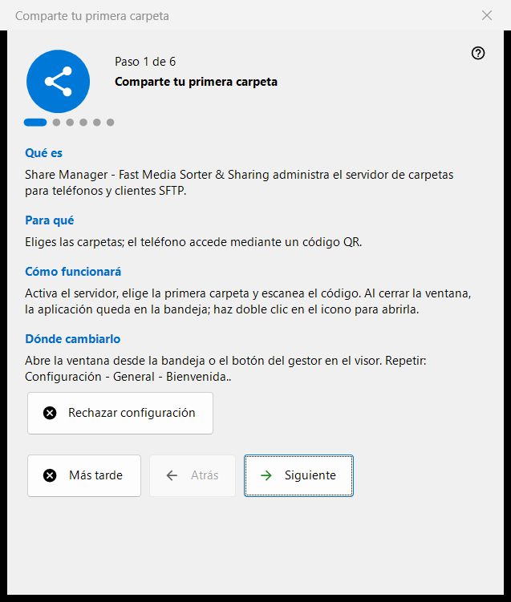
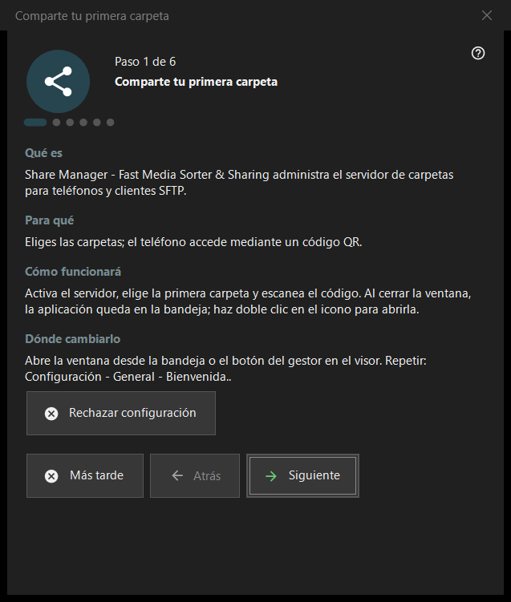

Comparte tu primera carpeta
Para qué sirve
Un asistente de seis pasos que lleva de cero a una carpeta servida a tu teléfono: activa el servidor, elige la primera carpeta, fija el puerto y las opciones básicas y termina con una comprobación del estado. Se abre en el primer inicio de Share Manager y se puede repetir desde los ajustes.


En este orden
- Lee la introducción y pulsa «Siguiente».
- En el paso «Activar el servidor» pulsa el botón una vez y confirma la solicitud de administrador.
- Elige la primera carpeta y sus opciones.
- Conserva el puerto o cámbialo.
- Fija el idioma, el inicio y las opciones de la red local.
- En la última página comprueba el estado, abre el código QR y pulsa «Finalizar».
Los elementos
Pasos y botones
El pie muestra «Paso N de 6». «Atrás» y «Siguiente» cambian de página, «Siguiente» pasa a ser «Finalizar» en la última página, «Más tarde» cierra el asistente y conserva lo que ya confirmaste, y «Rechazar configuración» lo cierra para siempre. Cada página tiene cuatro bloques breves: «Qué es», «Para qué», «Cómo funcionará» y «Dónde cambiarlo».
Activar el servidor
Hasta este paso el servidor está apagado. El botón de activación pide permisos de administrador una vez y añade una regla del Firewall de Windows para el programa. Si cancelas la solicitud, el servidor sigue apagado y puedes intentarlo de nuevo; si ya está encendido, la página indica que no hace falta más elevación.
Primera carpeta
Elige una carpeta y después su nombre, perfil y acceso. «Añadir el primer recurso ahora..» abre el asistente de recursos. Para continuar hace falta al menos una carpeta. Los ajustes se envían al servidor y las carpetas siguen siendo editables en la lista de la ventana principal.
Puerto
«Elige el sistema» asigna un puerto una sola vez y lo conserva; «Puerto fijo:» te deja escribir un número propio, por ejemplo para la redirección de puertos del router. El número se escribe en cada código QR y en cada archivo .fmscfg, así que cambiarlo después deja inservibles los códigos ya entregados. La regla del firewall pertenece al programa, no al puerto.
Ajustes básicos
«Idioma de la interfaz», «Iniciar al iniciar sesión en Windows», «Abrir la ventana del gestor al iniciar» y «Solo red local (sin acceso desde Internet)». El modo de red local desactiva la redirección de puertos y la dirección de internet. La opción de inicio de la versión de la Store se gestiona en los ajustes de Windows.
Finalizar
La última página comprueba el servidor y las carpetas elegidas y muestra el resultado; un estado verde significa que hay un recurso compartido realmente en marcha con acceso a las carpetas. «Código QR para el teléfono» abre el código y «Actualizar» repite la comprobación. Si el estado requiere atención, corrige la causa en la ventana principal o vuelve al paso de la carpeta.
Repetir el asistente
Configuración - General - «Bienvenida..» abre un menú con «Repetir configuración de carpetas», que vuelve a iniciar este asistente.
Ajustes del gestor · Ajustes de uso compartido SFTP · Ajustes del servidor de intercambio